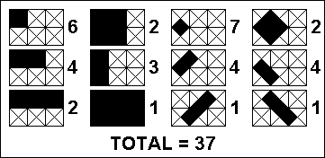

In a $3 \times 2$ cross-hatched grid, a total of $37$ different rectangles could be situated within that grid as indicated in the sketch.

There are $5$ grids smaller than $3 \times 2$, vertical and horizontal dimensions being important, i.e. $1 \times 1$, $2 \times 1$, $3 \times 1$, $1 \times 2$ and $2 \times 2$. If each of them is cross-hatched, the following number of different rectangles could be situated within those smaller grids:
| $1 \times 1$ | $1$ |
| $2 \times 1$ | $4$ |
| $3 \times 1$ | $8$ |
| $1 \times 2$ | $4$ |
| $2 \times 2$ | $18$ |
Adding those to the $37$ of the $3 \times 2$ grid, a total of $72$ different rectangles could be situated within $3 \times 2$ and smaller grids.
How many different rectangles could be situated within $47 \times 43$ and smaller grids?